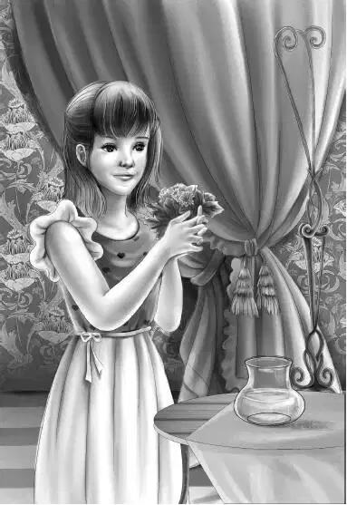

Mr.Alden walked around the store looking at everything. There were no Indian baskets left. He said，“Let’s go to see Lovan again.”
“Don’t get caught in the storm，” said a ranger.
“Storm？It looks pleasant to me，” said Benny.
“Well，you get to know the weather around these mountains，” said the ranger.“I was glad to see you come down so early. Dr. Osgood will be all right. He knows the weather，too.”
What they did not know was that snow had suddenly begun to cover the top of Old Flat Top. Dr. Osgood and his workmen were just running to get the things packed on the helicopter to take off in a hurry.
The Aldens piled into the station wagon and drove down to Lovan Dixon’s. The sky was still blue with hardly a cloud. It was very warm. They found Lovan hoeing in her flower garden next to the house.
“I want to get the earth stirred up before it rains，” she said to her visitors.
Grandfather laughed.“You think it is going to rain， too，” he said.
“Oh，yes，” said Lovan.“But come in.”
“What beautiful flowers！” cried Violet.“Every one is such a lovely color.”
Lovan looked at the eager little girl. She said， “Little Violet，you take these scissors and cut a big bunch of every flower you like. Don’t be afraid to pick a lot. They like to be picked. They blossom all the more.”
Mr. Alden smiled. But he had come on business，so he was glad to go into the house and ask questions.
“I wonder if you ever heard of an Indian boy around here about high school age？” he asked.
“No，” Lovan shook her head.“I am the only Indian left around here. All my brothers died，and my only sister died. She had a daughter，but she died，too.”
“Didn’t your sister’s daughter have any children？”
“I did hear that she had a son，but that baby died when she did. They had moved into Maine with the Maine Indians by then.”
“What was that baby’s name？” asked Henry.
“I don’t know. We had quarreled and I never did learn the baby’s name.”
Mr. Carter said，“We saw a young Indian boy this morning. He looked unhappy and seemed to be afraid. He hid behind the crowd，and now he has disappeared.”
“Oh，dear！” said Lovan.
“We’ll find him，” Benny said.
“How？” asked Lovan.“I thought you said he ran away.”
“Yes，he did. But he never could get away with Mr. Carter after him，and the rangers，and Grandfather.”
just then Violet came in wither flowers. They were beautiful—pink and white roses，old-fashioned sweet pinks，yellow daisies，lavender heliotrope，larkspur，and sweet peas.

“Let’s go right home and put them in water！” Violet said.“I can’t let them fade！” She madea pretty picture standing in the door with her brown hair， pink cheeks，and the lovely flowers.
“Soon，” said Grandfather.“Just one more question and then we’ll go. Why did your family leave you？”
“I left them，” said Lovan.“I wanted to go to school and nobody else did. They called me stuck-up because I could read and write. I loved school. There were children of all ages. When I was older，I helped the teacher with the little ones. I taught them the good things of Indian life. I taught them to make baskets and beadwork and moccasins. The children were very good at making up designs—even the little ones.”
“Good！” said Grandfather.“Someone must do that， or we’ll lose all the beautiful things that nobody can make as well as the lndian.”
“It’s too bad you don’t know anything about this strange Indian boy，” said Henry.
Lovan said slowly，“If he is from my family，his grandmother’s name would be Susan.”
“That’s something to go on，” said Henry.
“Come on，everyone，” said Mr. Alden.“Violet wants to go.”
“I don’t want to go，” said Violet，smiling，“I just want to put the flowers in water.”
As the Aldens left Lovan’s cottage they felt a cool wind. Clouds were beginning to sweep across the sky. The day that had been so sunny was suddenly very dark. A storm was brewing.
Mr. Alden said，“We will go to the motel first and then go and talk to the rangers.”
“I’ll stay at the motel，” said Violet.“I’ll put the flowers in water before supper. There must be some vases someplace.”
Everyone knew that Violet was perfectly happy arranging flowers. The rest of the family went back to the store. There was only one man there. He was not a ranger.
“Where is everybody？” asked Mr. Alden.
“They’ve all gone off in their jeeps to find an Indian boy. I’m keeping the store.”
Grandfather nodded.“They don’t waste much time，I see. The rainstorm will soon be here. I only wish we could have gone with them.”
“Listen！” said Jessie.“Dr. Osgood’s storm！”
The rain blew a few small spatters in at the open door. Then it came down like a sheet of water. It simply poured.
“Too bad the rangers started out，” said Benny. “They’ll get soaking wet.”
The man said，“They knew it was going to rain. They all wore raincoats. I think they thought the Indian boy would be easier to find in the rain.”
“How？” asked Benny.
The man shrugged.“I don’t know. They know more about finding people than I do. They do it all the time.”
Then in the pouring rain Dr. Osgood and his workman came in the door.
“Oh，everything is happening at once！” cried Benny.“Here come the jeeps！”
Dr. Osgood came in at exactly the same time as a ranger jumped down from a jeep. Then another ranger jumped out. Then another person jumped down. He had no raincoat and no hat. Water streamed down over his face. He kept his eyes down.